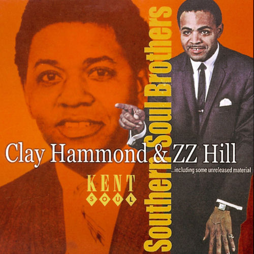

Clay Hammond
Clay Hammond Jr. was an American R&B and soul singer and songwriter. As well as recording in his own right, he is most notable for writing "Part Time Love", a no. 1 R&B chart hit in 1963 for Little Johnny Taylor.
Complete Discography & Tracklists (7)